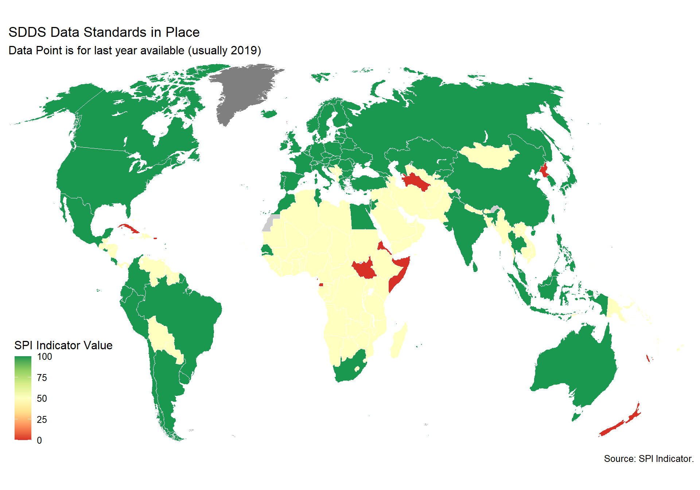
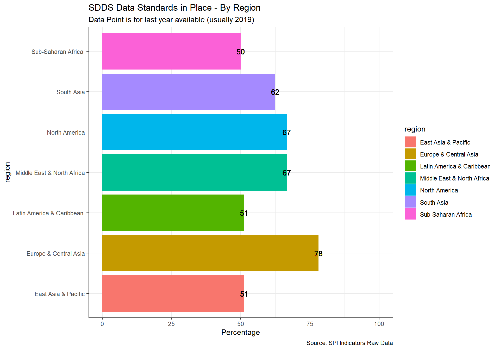
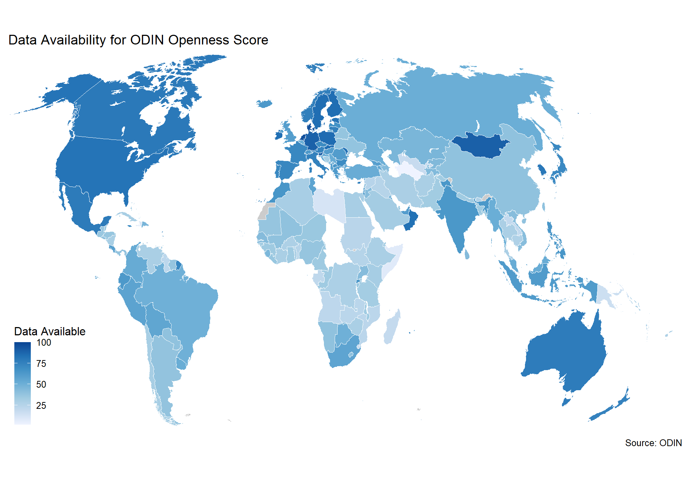
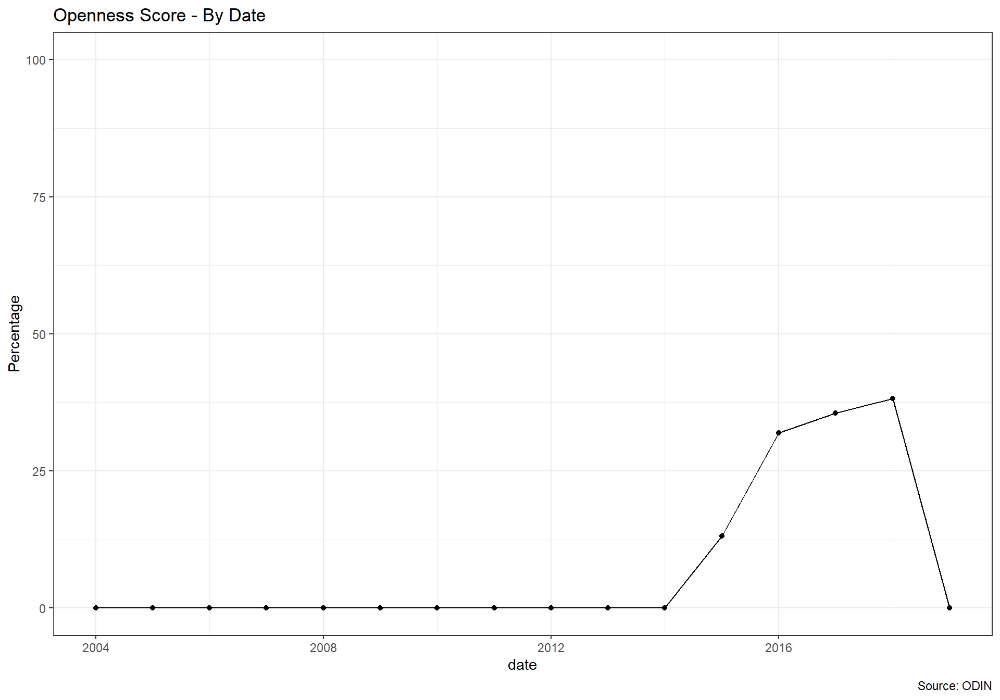
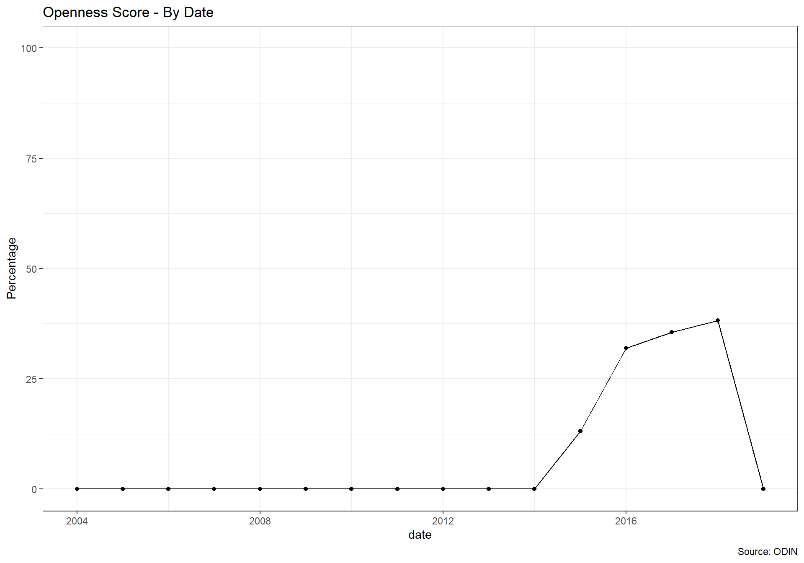
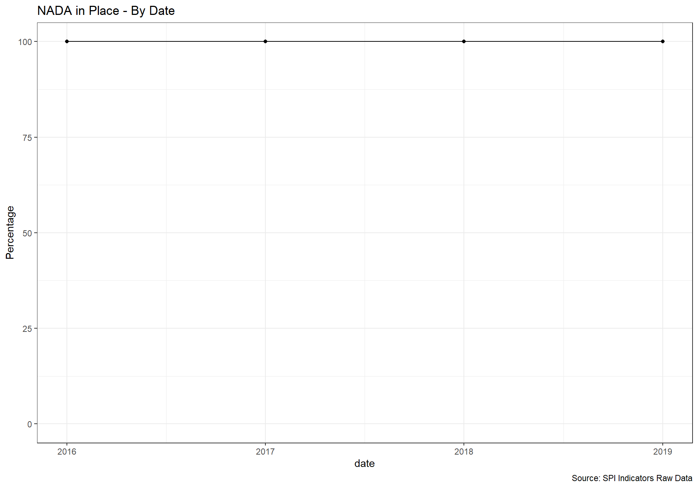
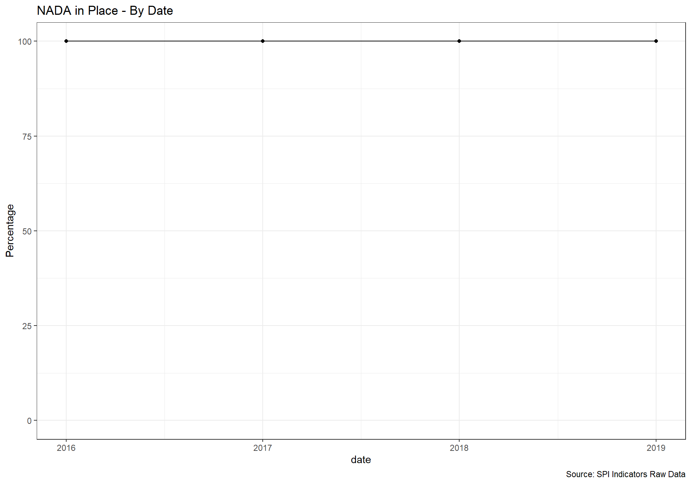

3 Data Services
Cleaning for Data Services Indicators. Data Services (4 Indicators):
- 2.1_DSDR - Indicator 2.1: Data releases
- 2.2_DSOA - Indicator 2.2: Online access
- 2.3_DSAS - Indicator 2.3: Advisory/ Analytical Services
- 2.4_DSDS - Indicator 2.4: Data services
3.1 Dimension 2.1: Data Releases
Data Dissemination Standard (SDDS) and electronic General Data Dissemination Standard (e-GDDS) were established by the International Monetary Fund (IMF) for member countries that have or that might seek access to international capital markets, to guide them in providing their economic and financial data to the public. Although subscription is voluntary, the subscribing member needs to be committed to observing the standard and provide information about its data and data dissemination practices (metadata). The metadata are posted on the IMF’s SDDS and e-GDDS websites.
1 Point. Subscribing to IMF SDDS+ or SDDS standards 0.5 Points. Subscribing to IMF e-GDDS standards 0 Points. Otherwise
# Parse the JSON content and convert it to a data frame.
D2.1_DSDR_sci <- read_csv(paste0(raw_dir, "/2.1_DSDR/SCI_archived_data.csv")) %>%
pivot_longer(
cols=YR2004:YR2015,
names_to='date',
values_to='value'
) %>%
filter(`Series Code`=='5.21.01.01.sdds') %>%
transmute(
iso3c=`Country Code`,
date=as.numeric(str_remove_all(date,"YR")),
SDDS=if_else(is.na(value),0,as.numeric(value))
) %>%
left_join(spi_df_empty) %>% #add on country metadata
filter(!is.na(income_level)) %>%
select(iso3c, date, SDDS )
#read in metadata file.
#pull data for several of the standards from WDI metadata
df <- WDI_metadata
# Manipulate and clean final data
df <- df %>%
filter(!is.na(Income.Group)) #keep just countries (drop aggregations)
D2.1_DSDR <- df %>%
mutate(iso3c=if_else(is.na(Country.Code), Code, Country.Code),
country=Table.Name) %>%
select(c('iso3c', 'date', 'IMF.data.dissemination.standard') ) %>%
mutate(IDDS=IMF.data.dissemination.standard) %>%
mutate(SPI.D2.1.GDDS=case_when(
IDDS=="Special Data Dissemination Standard Plus (SDDS+)" | IDDS=="Special Data Dissemination Standard Plus (SDDS Plus)" | IDDS=="Special Data Dissemination Standard (SDDS)"~ 1,
IDDS=="Enhanced General Data Dissemination System (e-GDDS)"~ 0.5,
TRUE ~ 0 ),
SDDS=case_when(
IDDS=="Special Data Dissemination Standard (SDDS)"~ 1,
TRUE ~ 0 )) %>%
bind_rows(D2.1_DSDR_sci) %>%
rename(RAW.D2.1.GDDS=IDDS) %>%
select(iso3c, date, RAW.D2.1.GDDS, SPI.D2.1.GDDS ) %>%
left_join(country_metadata)
D2.1_DSDR_map <- D2.1_DSDR
spi_mapper('D2.1_DSDR_map', 'SPI.D2.1.GDDS', 'SDDS Data Standards in Place' )

3.2 Dimension 2.2: Online access
This indicator measures the richness and openness of online access.
3.2.1 Source
Our source for this indicator is Open Data Watch. Data was last accessed on December 17, 2020. From Open Data watch:
The Open Data Inventory (ODIN) assesses the coverage and openness of official statistics to help identify gaps, promote open data policies, improve access, and encourage dialogue between national statistical offices (NSOs) and data users. ODIN 2018/19 includes 178 countries, including most all OECD countries. Two-year comparisons are for all countries with two years of data between 2015-2017. Scores can be compared across topics and countries.
We use the Openness score from ODIN for this measure. The score ranges from 0-100. It contains scores along five dimensions:
- Machine Readability
- Non-Proprietary format
- Download Options
- Metadata Available
- Terms of Use
A description for each of these five dimensions is below:
3.2.1.1 Machine Readability
Openness element 1 measures whether data are available in a machine readable format such as XLS, XLSX, CSV, and JSON. Machine-readable file formats allow users to easily process data using a computer. When data are made available in formats that are not machine readable, users cannot easily access and modify the data, which severely restricts the scope of the data’s use. In many cases PDF versions of datasets within reports can be useful to users, as the text in conjunction with the tables gives context and explanation to the figures which helps less technical users understand the data. Because of this, ODIN assessments do not penalize countries for making datasets available in PDF or other non-machine readable formats, unless these formats are the only option for exporting data. Scores are not penalized for having identical datasets in both machine readable and non-readable formats. Compression formats do not affect machine readability scores, only non-proprietary scores (see next page). Scores are given by data category, not indicator.
3.2.1.2 Non-Proprietary format
For the elements of data openness, scoring is calculated independent of the data coverage. If data files are compressed in RAR format (which is proprietary), data for that indicator should be considered proprietary even if the enclosing files are in a non-proprietary format. Files compressed in ZIP format are not affected.
3.2.1.3 Download Options
Openness element 3 measures whether data are available with three different download options: bulk download, API, and user-select options. A bulk download is defined at the indicator level as: The ability to download all data recorded in ODIN for a particular indicator (all years, disaggregations, and subnational data) in one file, or multiple files that can be downloaded simultaneously. Bulk downloads are a key component of the Open Definition, which requires data to be “provided as a whole . . . and downloadable via the internet.” User-selectable download options are defined as: Users must be able to select an indicator and at least one other dimension to create a download or table. These dimensions could include time periods, geographic disaggregations, or other recommended disaggregations. An option to choose the file export format is not enough. API stands for Application Programming Interface. Ideally, APIs should be clearly displayed on the website. ODIN assumes APIs are available for the NSOs entire data collection used in ODIN, unless clearly stated. ODIN assessors do not register for use or test API functionality. For more information on APIs, see this guide. Scores are given by data category, not indicator.
3.2.1.4 Metadata Available
Openness element 4 measures whether metadata are made available. Scores are given by data category, not indicator. Metadata are defined at the indicator level as information about how the data are defined/calculated and collected. ODIN classifies metadata into three categories: (1) Not Available, (2) Incomplete, and (3) Complete. The following must be available to classify metadata as complete: • Definition of the indicator, or definition of key terms used in the indicator description (as applicable), or how the indicator was calculated. • Publication (date of upload), compilation date (date on front of report is not sufficient), or date dataset was last updated. • Name of data source (what agency collected the data). If the metadata only have one or two of the above elements, they are scored as incomplete
3.2.1.5 Terms of Use
Openness element 5 measures whether data are available with an open terms of use. Generally, terms of use (TOU) will apply to an entire website or data portal (unless otherwise specified). In these cases, all data found on the same website and/or portal will receive the same score. If a portal is located on the same domain as the NSO website, the terms of use on the NSO site will apply. If the data are located on a portal or website on a different domain, another terms of use will need to be present. For a policy/ license to be accepted as a terms of use, it must clearly refer to the data found on the website. Terms of use that refer to nondata content (such as pictures, logos, etc.) of the website are not considered. A copyright symbol at the bottom of the page is not sufficient. A sentence indicating a recommended citation format is not sufficient. Terms of use are classified the following ways: (1) Not Available, (2) Restrictive, (3) Semi-Restrictive, and (4) Open. If the TOU contains one or more restrictive clauses, it receives 0 points and is classified as “restrictive.” Restrictive clauses include:
For more details, consult the ODIN technical documentation: https://docs.google.com/document/d/1ubPL1l_3im9bjlCVZ6W2ICAy6UAiXl1hGeA1aXImkxI/edit#
#read in ODIN data
for (i in c(2015,2016,2017,2018,2020, 2021, 2022, 2023)) {
temp <- read_csv(paste(raw_dir, '/2.2_DSOA/','ODIN_',i,'.csv', sep=""),) %>%
as_tibble(.name_repair = 'universal') %>%
mutate(date=i) %>%
filter(Data.categories=='All Categories') %>%
#convert all columns in "Indicator.coverage.and.disaggregation" "Data.available.last.5.years" "Data.available.last.10.years" "First.administrative.level" "Second.administrative.level" "Coverage.subscore" "Machine.readable" "Non.proprietary" "Download.options" "Metadata.available" "Terms.of.use" "Openness.subscore" "Overall.score" to numeric
mutate(
across(
c('Indicator.coverage.and.disaggregation', 'Data.available.last.5.years', 'Data.available.last.10.years', 'First.administrative.level', 'Second.administrative.level', 'Coverage.subscore', 'Machine.readable', 'Non.proprietary', 'Download.options', 'Metadata.available', 'Terms.of.use', 'Openness.subscore', 'Overall.score'),
as.numeric
)
) %>%
select(-Year)
assign(paste('openness_df',i,sep="_"), temp)
}
#bind different years together
openness_df <- bind_rows(openness_df_2015, openness_df_2016, openness_df_2017, openness_df_2018,openness_df_2020,openness_df_2021,
openness_df_2022,
openness_df_2023 )
openness_df <- openness_df %>%
select(Country.Code, date, Machine.readable, Non.proprietary, Download.options, Metadata.available, Terms.of.use, Openness.subscore) %>%
rename(iso3c=Country.Code) %>%
group_by( iso3c) %>%
right_join(country_metadata) %>%
mutate(
across(c('Machine.readable', 'Non.proprietary', 'Download.options', 'Metadata.available', 'Terms.of.use', 'Openness.subscore'),~if_else(is.na(.), 0, .) )
)
#do some quick renaming and formatting
openness_df_temp1 <- openness_df %>%
rename_with(~paste('RAW.D2.2',., sep="."), .cols=c('Machine.readable', 'Non.proprietary', 'Download.options', 'Metadata.available', 'Terms.of.use', 'Openness.subscore') )
openness_df_temp2 <- openness_df %>%
mutate(across(c('Machine.readable', 'Non.proprietary', 'Download.options', 'Metadata.available', 'Terms.of.use', 'Openness.subscore'), ~./100)) %>%
rename_with(~paste('SPI.D2.2',., sep="."), .cols=c('Machine.readable', 'Non.proprietary', 'Download.options', 'Metadata.available', 'Terms.of.use', 'Openness.subscore') )
openness_df <- openness_df_temp1 %>%
left_join(openness_df_temp2)
#add to spi dataframe
spi_df <- spi_df %>%
left_join(openness_df) 

3.3 Dimension 2.3: Advisory/ Analytical Services
No established source exists for this indicator. This is experimental.
3.4 Dimension 2.4: Data services
NSO has a listing of surveys and microdata sets that can provide the necessary data and reference for follow-up. Upon well-defined request and procedure per the national law and practice, users and practitioners can obtain the data collected from the households and businesses when needed.
NADA is an open source microdata cataloging system, compliant with the Data Documentation Initiative (DDI) and Dublin Core’s RDF metadata standards. It serves as a portal for researchers to browse, search, compare, apply for access, and download relevant census or survey datasets, questionnaires, reports and other information.
1 Point. Yes 0 Points. No
#read in csv file.
D2.4_NADA <- read_csv(file = paste(raw_dir, '/2.4_DSDS/', "D2.4.NADA.csv", sep="/" )) %>%
bind_rows(read_csv(file = paste(raw_dir, '/2.4_DSDS/', "D2.4.NADA.2020.csv", sep="/" ))) %>%
bind_rows(read_csv(file = paste(raw_dir, '/2.4_DSDS/', "D2.4.NADA.2022.csv", sep="/" )) %>% mutate(date=2021)) %>%
bind_rows(read_csv(file = paste(raw_dir, '/2.4_DSDS/', "D2.4.NADA.2022.csv", sep="/" )) %>% mutate(date=2022)) %>%
bind_rows(read_csv(file = paste(raw_dir, '/2.4_DSDS/', "D2.4.NADA.2023.csv", sep="/" )) %>% mutate(date=2023)) %>%
mutate(SPI.D2.4.NADA=case_when(
NADA==1 ~ 1,
NADA==0 ~ 0,
TRUE ~ 0
)) %>%
rename(RAW.D2.4.NADA=NADA,
RAW.D2.4.NADA_text=NADA_text) %>%
select(iso3c, date, RAW.D2.4.NADA,RAW.D2.4.NADA_text, SPI.D2.4.NADA ) %>%
arrange(date, iso3c)
D2.4_NADA_map <- D2.4_NADA %>%
filter(SPI.D2.4.NADA>0) %>%
left_join(country_metadata)
spi_mapper('D2.4_NADA_map', 'RAW.D2.4.NADA', 'NADA in Place' )

 
